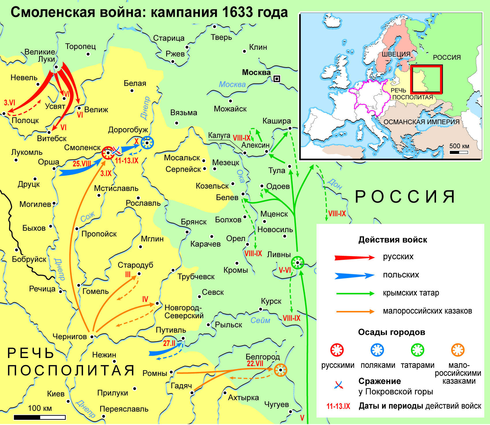

Смоленская война
К 1632 году истек срок Деулинского перемирия. В Польше умер король Сигизмунд III, началась подготовка к выбору нового монарха. В России решили, что время внутриполитической борьбы, когда Польша ослаблена, будет подходящим для развязывания войны. Земский собор постановил начать военные действия. Целью России в этой войне стало возвращение городов, утерянных в ходе Смуты, а также земель, переданных Польше по условиям Деулинского перемирия.
В начале войны, в 1633 году, русские войска штурмовали Полоцк. Взять город небольшому войску не удалось, но русские войска в течение трех дней находились в городе, вернулись с захваченными пленными, добычей и знаменами противников.
Основными военными силами командовал воевода Михаил Борисович Шеин и окольничий Артемий Измайлов. Их задачей стало взятие Смоленска. На первом этапе военные действия шли успешно: после восьмимесячной осады Шеину почти удалось взять Смоленск, однако в августе 1633 года к городу подошли войска Владислава. Теперь русская армия оказалась в окружении. Поляки умело распускали слух о движении значительных крымских отрядов в Россию. Эти известия подрывали и без того слабый боевой дух армии, многие солдаты бежали на родину, стремясь защитить свою страну и свои семьи. Желая спасти остатки войск, М.Б.Шеин капитулировал. Взамен на возможность увести войска, воевод воевода отдал противнику знамя и артиллерию.
В октябре 1633 года умер патриарх Филарет, который фактически правил государством. Новым патриархом стал Иосиф, до этого бывший епископом в Пскове. Смертью Филарета воспользовались те, кого он отстранил от власти – Салтыковы. Эта влиятельная семья давно стремилась свести счеты с талантливым, но надменным воеводой М.Б. Шеиным. Теперь, с поражением М.Б. Шеина, у Салтыковых появился повод устранить воеводу от дел: М.Б. Шеин не только лишился покровительства Филарета, но и потерпел поражение в осаде Смоленска. В апреле 1634 года М.Б. Шеин и А.В. Измайлов были приговорены к смертной казни за «измену».
В ходе войны состоялись и другие сражения: в 1633 г. – оборона Путивля от поляков, которая завершилась победой русских войск; 1634 г. – успешная оборона русскими войсками крпепости Белая.
